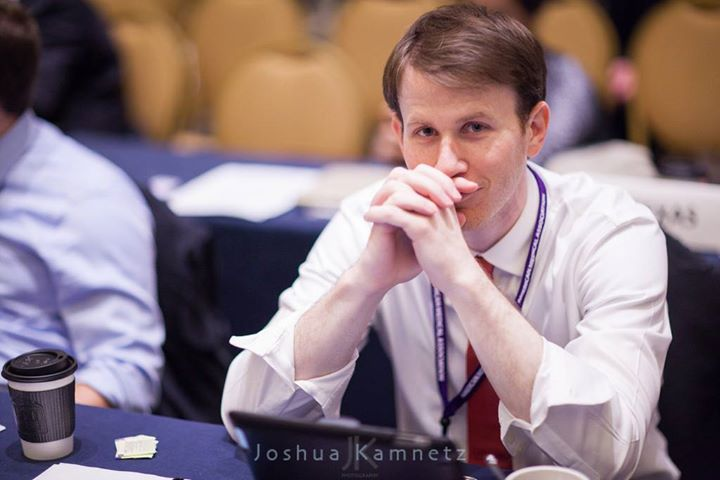

I am computational biologist and medical student. My research focuses primarily on understanding and predicting the evolution of viral proteins though sometimes my focus strays to studying protein evolution in general. Specifically, I am interested in identifying and quantifying the forces driving the evolution of viruses and how that plays out in the human population. In addition, I am interested in finding ways to predict the molecular evolution and population dynamics of human viruses with an eye to protein structure and computational biophysical techniques. I do largely computational biology with some intermittent (very intermittent these days) experimental protein structure projects. For my MS research, I crystallized and solved the structure of C2 domains in synaptotagmin with calcium in the binding pocket. For my PhD research, I implemented molecular evolutionary models of protein evolution and used them to show that simple protein geometry is a major determinant of influenza virus evolution. As a postdoctoral fellow, my current work is focused on identifying constraints that will predict further evolution of the influenza hemagglutinin and neuraminidase proteins. In addition, I do a lot of work to understand how existing energy functions can predict the long term (billions of years) evolutionary dynamics of protein-protein interactions, and occasionally (with little success) try to predict specific adaptive mutations.
I have a number of on going collaborations in everything from studying flu and ebola virus evolution to testing the effects of individual point mutations via molecular dynamics to analyzing clinical biomarkers and outcomes. Also, I am open to virtually any new computational, statistical, theoretical, or perhaps even philosophical projects. If you have any questions about my work or I can be of any help, please let me know.
To find out about my research interests, and the projects I am currently working on, visit the research page.
Follow me on twitter @austingmeyer
Current Affliation
I am a member of the lab of Dr. Claus Wilke at the University of Texas at Austin.